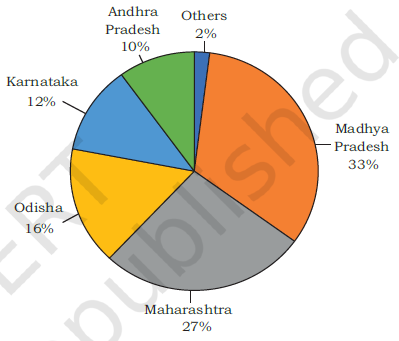
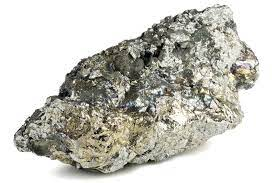

Manganese
=>Manganese is mainly used in the
manufacturing of steel and ferro-manganese
alloy.
==>Nearly 10 kg of manganese is required
to manufacture one tonne of steel.
==>It is also
used in manufacturing bleaching powder,
insecticides and paints.

